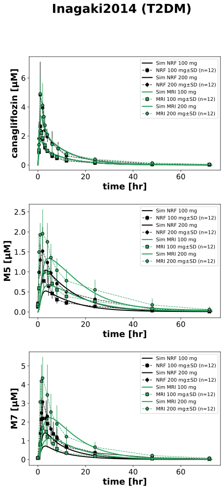
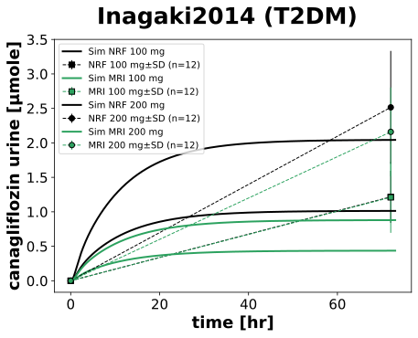
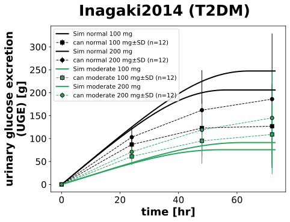

|
 |
|
 |
|
 |
../../../../experiments/studies/inagaki2014.py
from typing import Dict
from sbmlsim.data import DataSet, load_pkdb_dataframe
from sbmlsim.fit import FitMapping, FitData
from sbmlutils.console import console
from pkdb_models.models.canagliflozin.experiments.base_experiment import (
CanagliflozinSimulationExperiment,
)
from pkdb_models.models.canagliflozin.experiments.metadata import Tissue, Route, Dosing, ApplicationForm, Health, \
Fasting, CanagliflozinMappingMetaData
from sbmlsim.plot import Axis, Figure
from sbmlsim.simulation import Timecourse, TimecourseSim
from pkdb_models.models.canagliflozin.helpers import run_experiments
class Inagaki2014(CanagliflozinSimulationExperiment):
"""Simulation experiment of Inagaki2014."""
conditions_renal = {
"normal": "Normal renal function",
"moderate": "Moderate renal impairment",
}
labels = {
"normal": "NRF",
"moderate": "MRI",
}
renal_functions = {
"normal": 92.7/100, # GFR
"moderate": 39.7 / 100, # GFR
}
markers = {
100: "s",
200: "o",
}
doses = [100, 200]
info = {
"can": "canagliflozin",
"m5": "M5",
"m7": "M7",
}
bodyweights = {"moderate": 74.85, "normal": 75.33}
fpg = {"moderate": 167.5 / 18, "normal": 183.1 / 18}
gfr = {"moderate": 39.7, "normal": 92.7}
def datasets(self) -> Dict[str, DataSet]:
dsets = {}
for fig_id in ["Fig1", "Fig2", "Tab3A"]:
df = load_pkdb_dataframe(f"{self.sid}_{fig_id}", data_path=self.data_path)
for label, df_label in df.groupby("label"):
dset = DataSet.from_df(df_label, self.ureg)
# unit conversion to mole/l
if label.startswith("canagliflozin_"):
dset.unit_conversion("mean", 1 / self.Mr.can)
elif label.startswith("M7_"):
dset.unit_conversion("mean", 1 / self.Mr.m7)
elif label.startswith("M5_"):
dset.unit_conversion("mean", 1 / self.Mr.m5)
dsets[f"{label}"] = dset
# console.print(dsets)
# console.print(dsets.keys())
return dsets
def simulations(self) -> Dict[str, TimecourseSim]:
Q_ = self.Q_
tcsims = {}
for dose in self.doses:
for condition, renal_class in self.conditions_renal.items():
tcsims[f"po_can{dose}_{condition}"] = TimecourseSim(
Timecourse(
start=0,
end=73 * 60, # [min]
steps=500,
changes={
**self.default_changes(),
"BW": Q_(self.bodyweights[condition], "kg"),
"[KI__fpg]": Q_(self.fpg[condition], "mM"),
"KI__f_renal_function": Q_(self.gfr[condition] / 100, "dimensionless"), # [0, 1] <=> [0, 100] gfr
"PODOSE_can": Q_(dose, "mg")
},
)
)
return tcsims
def fit_mappings(self) -> Dict[str, FitMapping]:
mappings = {}
for name, sid in [('canagliflozin', '[Cve_can]'),
('M5', '[Cve_m5]'),
('M7', '[Cve_m7]'),
('glucose_cumulative_amount', 'KI__UGE'),
('canagliflozin_urine', 'Aurine_can')]:
if name in {"canagliflozin", "M5", "M7"}:
tissue = Tissue.PLASMA
else:
tissue = Tissue.URINE
for condition, renal_class in self.conditions_renal.items():
for dose in self.doses:
mappings[f"fm_po_can_{name}_{dose}_{condition}"] = FitMapping(
self,
reference=FitData(
self,
dataset=f"{name}_CAN{dose}_{condition}",
xid="time",
yid="mean",
yid_sd="mean_sd",
count="count",
),
observable=FitData(
self, task=f"task_po_can{dose}_{condition}", xid="time", yid=f"{sid}",
),
metadata=CanagliflozinMappingMetaData(
tissue=tissue,
route=Route.PO,
application_form=ApplicationForm.TABLET,
dosing=Dosing.SINGLE,
health=Health.T2DM if condition == "normal" else Health.T2DM_RENAL_IMPAIRMENT,
fasting=Fasting.FED,
),
)
# console.print(mappings)
return mappings
def figures(self) -> Dict[str, Figure]:
return {
**self.figure_single(),
**self.figure_urine(),
**self.figure_uge(),
}
def figure_single(self) -> Dict[str, Figure]:
fig = Figure(
experiment=self,
sid="Fig_single",
num_rows=3,
num_cols=1,
name=f"{self.__class__.__name__} (T2DM)",
)
plots = fig.create_plots(xaxis=Axis(self.label_time, unit=self.unit_time), legend=True)
plots[0].set_yaxis(self.label_can, unit=self.unit_can)
plots[1].set_yaxis(self.label_m5, unit=self.unit_m5)
plots[2].set_yaxis(self.label_m7, unit=self.unit_m7)
for condition, renal_class in self.conditions_renal.items():
for dose in self.doses:
for k, sid in enumerate(self.info):
# simulation
plots[k].add_data(
task=f"task_po_can{dose}_{condition}",
xid="time",
yid=f"[Cve_{sid}]",
label=f"Sim {self.labels[condition]} {dose} mg",
color=self.renal_colors[renal_class],
)
# data
did = self.info[sid]
plots[k].add_data(
dataset=f"{did}_CAN{dose}_{condition}",
xid="time",
yid="mean",
yid_sd="mean_sd",
count="count",
label=f"{self.labels[condition]} {dose} mg",
color=self.renal_colors[renal_class],
marker=self.markers[dose],
)
return {
fig.sid: fig,
}
def figure_urine(self) -> Dict[str, Figure]:
fig = Figure(
experiment=self,
sid="Fig_urine",
name=f"{self.__class__.__name__} (T2DM)",
)
plots = fig.create_plots(xaxis=Axis(self.label_time, unit=self.unit_time), legend=True)
plots[0].set_yaxis(self.label_can_urine, unit=self.unit_can_urine)
for dose in self.doses:
for condition, renal_class in self.conditions_renal.items():
# simulation
plots[0].add_data(
task=f"task_po_can{dose}_{condition}",
xid="time",
yid=f"Aurine_can",
label=f"Sim {self.labels[condition]} {dose} mg",
color=self.renal_colors[renal_class],
)
# data
plots[0].add_data(
dataset=f"canagliflozin_urine_CAN{dose}_{condition}",
xid="time",
yid="mean",
yid_sd="mean_sd",
count="count",
label=f"{self.labels[condition]} {dose} mg",
color=self.renal_colors[renal_class],
marker=self.markers[dose],
)
return {
fig.sid: fig,
}
def figure_uge(self) -> Dict[str, Figure]:
fig = Figure(
experiment=self,
sid="Fig_uge",
name=f"{self.__class__.__name__} (T2DM)",
)
plots = fig.create_plots(xaxis=Axis(self.label_time, unit=self.unit_time), legend=True)
plots[0].set_yaxis(self.label_uge, unit=self.unit_uge)
for condition, renal_class in self.conditions_renal.items():
for dose in self.doses:
# simulation
plots[0].add_data(
task=f"task_po_can{dose}_{condition}",
xid="time",
yid=f"KI__UGE",
label=f"Sim {condition} {dose} mg",
color=self.renal_colors[renal_class],
)
# data
plots[0].add_data(
dataset=f"glucose_cumulative_amount_CAN{dose}_{condition}",
xid="time",
yid="mean",
yid_sd="mean_sd",
count="count",
label=f"can {condition} {dose} mg",
color=self.renal_colors[renal_class],
marker=self.markers[dose],
)
return {
fig.sid: fig,
}
if __name__ == "__main__":
run_experiments(Inagaki2014, output_dir=Inagaki2014.__name__)
{kind=link}
{kind=link}
{kind=link}